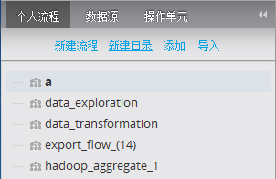

每个Alpine用户都可以对自己管理的流程目录进行维护。包括创建分类、重命名目录、删除目录以及批量将流程信息移动到某一目录中。
右击个人流程视窗的任何位置即可出现操作菜单，包括创建分类目录和刷新目录信息。

要对一个目录进行重命名和删除操作，右击目录名称后出现操作菜单。
提示： 删除一个目录会删除其下所有流程信息。
移动流程信息到某一目录下：
1. 选择待移动的流程(按住“CTRL”同时选择流程可实现多选)
2. 拖动选中流程至目标目录。
a) 如果选中流程不允许移动到目标目录则会在浮动提示框中以红色显示。
b) 否则在浮动提示框中以绿色显示。
3. 释放鼠标，完成流程移动。
提示：流程不允许移动到根目录、当前所在目录中。目录不允许被移动。